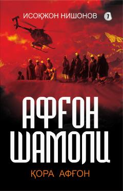

ASAfgʻonistondagi murakkab kurashlar va Vatan himoyasi haqidagi sarguzasht roman.
Ushbu asar Afgʻonistondagi murakkab siyosiy vaziyat va terrorizmga qarshi kurash mavzusini yoritadi. Roman qahramoni Boʻronning Vatan tinchligi yoʻlida boshdan kechirgan ogʻir sinovlari hamda xoinlarning qilmishlari haqida hikoya qilinadi.